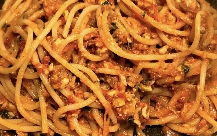
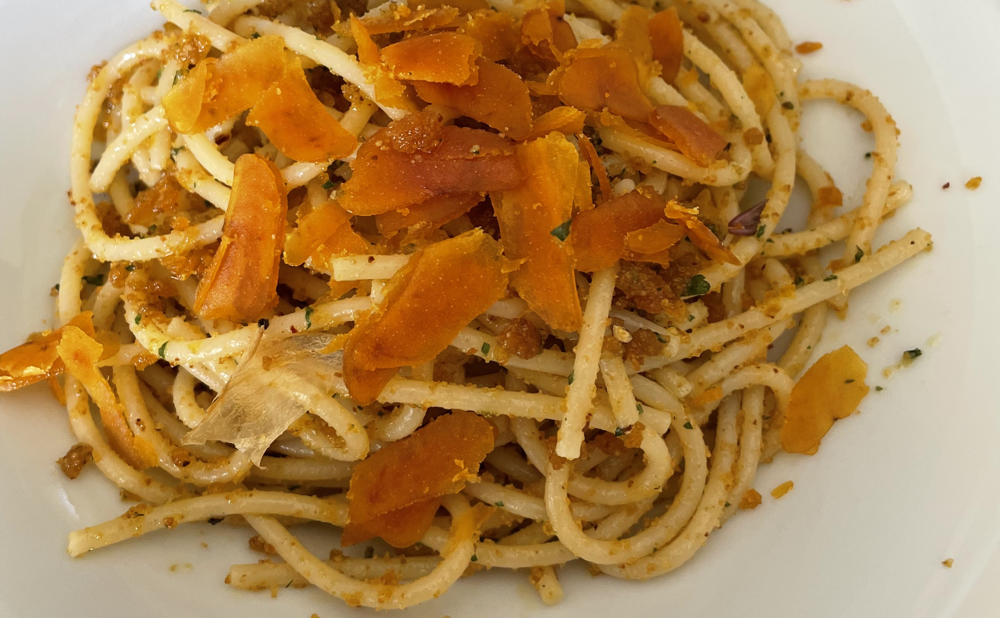

Spaghetti alla bottarga
Introduzione e contesto

Provenienza: liberamente ispirato da una cena di Franco Chiaromonte. Ritengo che esista solo un modo per assaporare l'essenza di quella prelibatezza che è la bottarga di muggine.
Ingredienti
| Ingrediente | Quantità | Unità | Note |
|---|---|---|---|
| Spaghetti | Senatore Cappelli | ||
| Bottarga di muggine | evitare assolutamente quella già grattugiata | ||
| Aglio | |||
| Olio extra vergine d'oliva | |||
| Peperoncino | |||
| Pangrattato | |||
| Prezzemolo. |
Preparazione

Preparare in un tegame aglio, olio EVO, peperoncino e prezzemolo. Abbassare la fiamma. Spargere un paio di cucchiai di pangrattato e cuocere qualche minuto evitando che si abbrunisca troppo. Togliere dal fuoco. Aggiungere la bottarga. Intanto avrete cotti gli spaghetti al dente. Spadellare il tutto per qualche istante pepando leggermente. Rapitalà di Alcamo.

Note e osservazioni
- Per la cottura della pasta usare acqua ben salata e scolare con il condimento già pronto.
- Indicazione di tempo presente nel testo: 2 minuti
{kind=link}